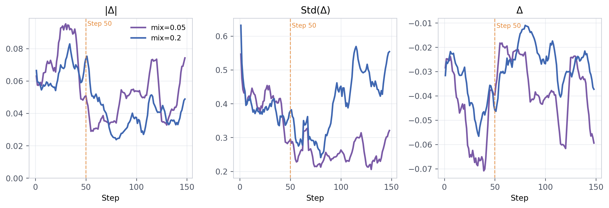

![Figure 1: Overview of StepOPSD. StepOPSD decouples online environment interaction from offline credit shaping. While the base GRPO rollout dynamics remain untouched, post-rollout trajectories are structurally parsed into causal action boundaries. By rescoring these isolated spans under hindsight-enriched teacher contexts, StepOPSD translates token-level preference gaps into a direct modulation of the RL advantage—injecting dense, step-aware supervision without distorting the primary trajectory-level reward signal.](figures/1332/fig_001.png)
StepOPSD proposes a step-aware online preference distillation framework that addresses the credit-assignment mismatch in multi-turn agent RL by redistributing credit to action-centered step segments using hindsight-enriched teacher contexts.
本文提出StepOPSD，一种步骤感知的在线偏好蒸馏框架，通过将智能体轨迹分解为以动作为中心的步骤片段，并利用同组成功轨迹进行事后信用重分配，有效解决了多轮交互中信用分配不匹配的问题。在ALFWorld和Search-QA等基准上取得了最佳或次优结果，并揭示了两个关键超参数（α_clip和λ_mix）的调节规律。
Deep Note — stepopsd
Key Takeaways - StepOPSD decomposes agent trajectories into action-centered step segments for credit redistribution, rather than treating the whole trajectory as a monolithic string. - It uses peer-trajectory hindsight (successful trajectories from the same GRPO group) to rescore failed steps, avoiding external oracle demonstrations. - The method achieves best or second-best results on ALFWorld Heat (79.1%), PickTwo (95.0%), Search-QA TriviaQA (61.6%), and HotpotQA (40.4%). - A two-knob law is identified: smaller α_clip stabilizes local trust regions, while optimal λ_mix is task-dependent. - Step-aware distillation is most beneficial when trajectory-level rewards are weakly aligned with the local actions that determine downstream success.
0) Metadata
- Title: StepOPSD: Step-Aware Online Preference Distillation for Agent Reinforcement Learning
- Alias: stepopsd
- Authors: Yanfei Zhang, Xu Lin, Chenglin Wu
- arXiv ID: 2605.27140
- Published:
- Links:
- Abs: https://arxiv.org/abs/2605.27140
- HTML: https://arxiv.org/html/2605.27140v1
- PDF: https://arxiv.org/pdf/2605.27140
- Tags: credit-assignment, online-distillation, agent-rl, step-aware, hindsight
- Domains: ai_safety, system_safety
- Rating: 4/5 (base 1 + quality 2 + observation 1)
1) Why-read
StepOPSD proposes a step-aware online preference distillation framework that addresses the credit-assignment mismatch in multi-turn agent RL by redistributing credit to action-centered step segments using hindsight-enriched teacher contexts.
2) CRGP
C — Context
Reinforcement learning for multi-turn agents suffers from sparse, trajectory-level rewards that fail to credit local decisions. Existing online policy distillation (OPD) provides denser token-level supervision but treats heterogeneous agent trajectories as monolithic strings, ignoring causal interaction boundaries.
R — Related work
- GRPO (Group Relative Policy Optimization) broadcasts a single terminal reward across all tokens, causing credit-assignment mismatch.
- RLSD re-weights all tokens using self-divergence, while SDAR applies soft token-level gating over the full sequence.
- Search-R1 and similar agentic post-training paradigms combine RL with teacher-guided distillation.
- Hindsight experience replay and oracle demonstrations provide dense feedback but incur distribution shift or annotation cost.
G — Gap
Existing online policy distillation methods treat agent trajectories as monolithic strings, failing to isolate the causal action steps that determine downstream success. This leads to wasted supervision on non-controllable tokens and blurs the credit assignment for localized errors.
P — Proposal
StepOPSD decomposes completed trajectories into action-centered step segments, rescoring them under hindsight-enriched teacher contexts (using peer-trajectory hindsight). It converts token-level log-probability gaps into sign-preserving advantage shaping with a normalized per-step credit budget before the GRPO update, injecting dense step-aware supervision without distorting the primary trajectory-level reward.
---
4) Experiments
Main results
On ALFWorld, StepOPSD achieves 79.1% on Heat (first), 95.0% on PickTwo (first). On Search-QA, it achieves 61.6% on TriviaQA (first) and 40.4% on HotpotQA (tied-best). Models used: Qwen3-1.7B and Qwen2.5-3B-Instruct.
Ablation
Smaller α_clip acts as a broadly stabilizing local trust region, while the optimal global mixing strength λ_mix is task-dependent: weaker shaping favors embodied control (ALFWorld), stronger shaping favors retrieval-centric QA (Search-QA).
Limitations
['The method relies on task-specific tags to parse step boundaries, which may not generalize to all agent environments.', 'Peer-trajectory hindsight assumes at least one successful trajectory exists in the GRPO group, which may not hold in sparse-reward settings.', 'The two-knob law suggests task-dependent hyperparameter tuning is required for optimal performance.']
5) Why it matters
- Directly addresses the credit-assignment bottleneck in multi-turn agent RL, which is a core challenge for building reliable agents.
- Provides a non-intrusive, modular architecture that can be dropped into existing GRPO pipelines without changing online rollout dynamics.
- The two-knob law offers practical guidance for tuning step-aware distillation in different task domains.
6) Next steps
- [ ] Apply StepOPSD to other agentic benchmarks (e.g., WebShop, ScienceWorld) to test generalization.
- [ ] Explore automatic step boundary detection without relying on task-specific tags.
- [ ] Investigate combining peer-trajectory hindsight with other hindsight forms (e.g., oracle demonstrations) for harder tasks.
- [ ] Study the interaction between α_clip and λ_mix more systematically to derive a principled tuning strategy.
7) Scoring
4/5 = base 1 + quality 2 + observation 1
StepOPSD：面向智能体强化学习的步骤感知在线偏好蒸馏
主要结论 - StepOPSD将智能体轨迹分解为以动作为中心的步骤片段进行信用重分配，而非将整个轨迹视为单一字符串。 - 利用同组成功轨迹（peer-trajectory hindsight）对失败步骤进行重新评分，避免依赖外部专家示范。 - 在ALFWorld Heat（79.1%）、PickTwo（95.0%）、Search-QA TriviaQA（61.6%）和HotpotQA（40.4%）上取得最佳或次优结果。 - 发现双旋钮定律：较小的α_clip稳定局部信任域，而最优λ_mix依赖于具体任务。 - 当轨迹级奖励与决定下游成功的局部动作弱对齐时，步骤感知蒸馏收益最大。
1) 阅读理由
StepOPSD提出了一种步骤感知的在线偏好蒸馏框架，通过利用事后增强的教师上下文对动作步骤进行信用重分配，解决了多轮智能体强化学习中的信用分配不匹配问题。
2) CRGP（背景 / 相关工作 / 差距 / 方案）
上下文：多轮智能体强化学习面临稀疏的轨迹级奖励，无法有效奖励局部决策。现有在线策略蒸馏（OPD）提供更密集的令牌级监督，但将异质智能体轨迹视为单一字符串，忽略了因果交互边界。相关工作：GRPO将单一终端奖励广播到所有令牌，导致信用分配不匹配；RLSD使用自散度重新加权所有令牌；SDAR在全序列上应用软令牌级门控；Search-R1等智能体后训练范式结合RL与教师引导蒸馏；事后经验回放和专家示范提供密集反馈但存在分布偏移或标注成本。差距：现有在线策略蒸馏方法将智能体轨迹视为单一字符串，未能隔离决定下游成功的因果动作步骤，导致对不可控令牌的监督浪费，并模糊了局部错误的信用分配。提案：StepOPSD将完整轨迹分解为以动作为中心的步骤片段，在事后增强的教师上下文（使用同组轨迹事后）下重新评分；在GRPO更新前，将令牌级对数概率差距转换为符号保持的优势塑形，并带有归一化的每步信用预算，从而在不扭曲主轨迹级奖励的情况下注入密集的步骤感知监督。
3) 实验
在ALFWorld上，StepOPSD在Heat任务上达到79.1%（第一），在PickTwo任务上达到95.0%（第一）。在Search-QA上，在TriviaQA上达到61.6%（第一），在HotpotQA上达到40.4%（并列最佳）。使用的模型为Qwen3-1.7B和Qwen2.5-3B-Instruct。
消融实验
较小的α_clip作为广泛稳定的局部信任域，而最优全局混合强度λ_mix依赖于任务：较弱的塑形有利于具身控制任务（ALFWorld），较强的塑形有利于检索为中心的问答任务（Search-QA）。
局限性
['该方法依赖任务特定标签来解析步骤边界，可能无法泛化到所有智能体环境。', '同组轨迹事后假设GRPO组中至少存在一条成功轨迹，在稀疏奖励设置中可能不成立。', '双旋钮定律表明需要针对任务进行超参数调优才能达到最优性能。']
4) 重要性
- 直接解决了多轮智能体强化学习中的信用分配瓶颈，这是构建可靠智能体的核心挑战。
- 提供了一种非侵入式、模块化的架构，可以嵌入现有GRPO流程而无需改变在线 rollout 动态。
- 双旋钮定律为不同任务领域中的步骤感知蒸馏调优提供了实用指导。
5) 下一步
- [ ] 将StepOPSD应用于其他智能体基准（如WebShop、ScienceWorld）以测试泛化能力。
- [ ] 探索无需任务特定标签的自动步骤边界检测方法。
- [ ] 研究将同组轨迹事后与其他事后形式（如专家示范）结合以应对更难的任务。
- [ ] 更系统地研究α_clip与λ_mix之间的相互作用，以推导出原则性的调优策略。
![Figure 3: Three-way StepOPSD ablation on ALFWorld with Qwen2.5-3B-Instruct . We compare the heavy baseline ( λ m i x = 0.2 \lambda_{mix}=0.2 , α c l i p = 0.2 \alpha_{clip}=0.2 ), the lower- λ m i x \lambda_{mix} variant ( λ m i x = 0.05 \lambda_{mix}=0.05 , α c l i p = 0.2 \alpha_{clip}=0.2 ), and the reduced- α c l i p \alpha_{clip} variant ( λ m i x = 0.2 \lambda_{mix}=0.2 , α c l i p = 0.05 \alpha_{clip}=0.05 ). The validation panel marks peak and final checkpoints; the others show training dynamics and stage-wise summaries over steps 0–50, 50–100, and 100+.](figures/1332/fig_003.png)

![Figure 4: Mechanistic view of weight clipping at 3B. In ALFWorld, tightening α c l i p \alpha_{clip} under fixed λ m i x = 0.2 \lambda_{mix}=0.2 prevents the late-stage explosion of Std ( Δ ) \mathrm{Std}(\Delta) and shortens embodied trajectories. In Search-QA, tightening α c l i p \alpha_{clip} under fixed λ m i x = 0.05 \lambda_{mix}=0.05 lowers gap variance relative to the loose-clip counterpart and increases tool use. The phase markers at steps 50 and 100 show that clipping matters most after the policy enters the mature regime.](figures/1332/fig_004.png)